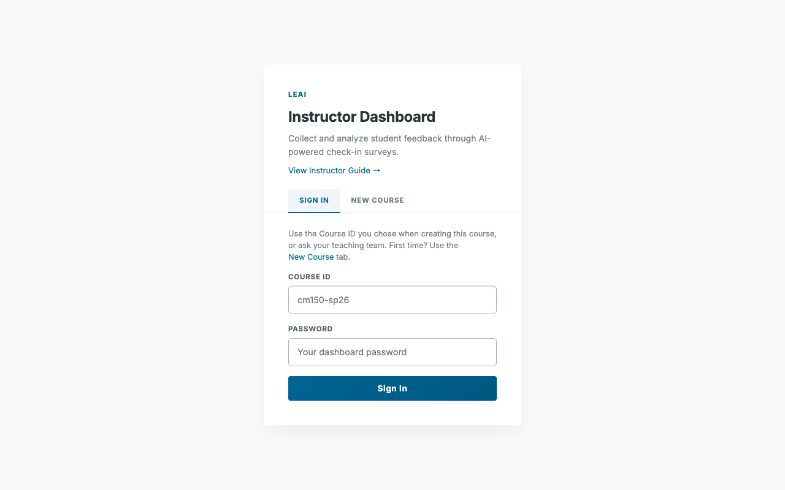
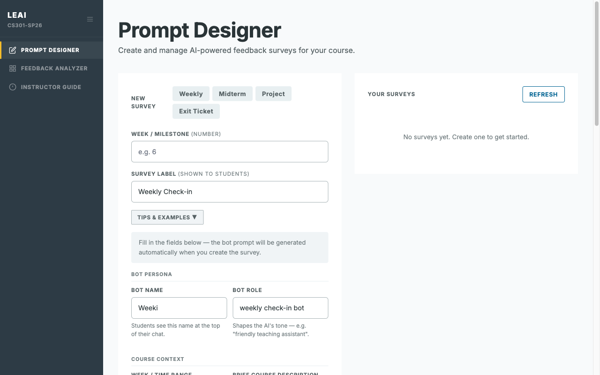
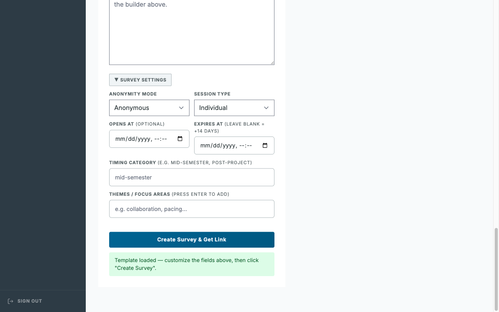
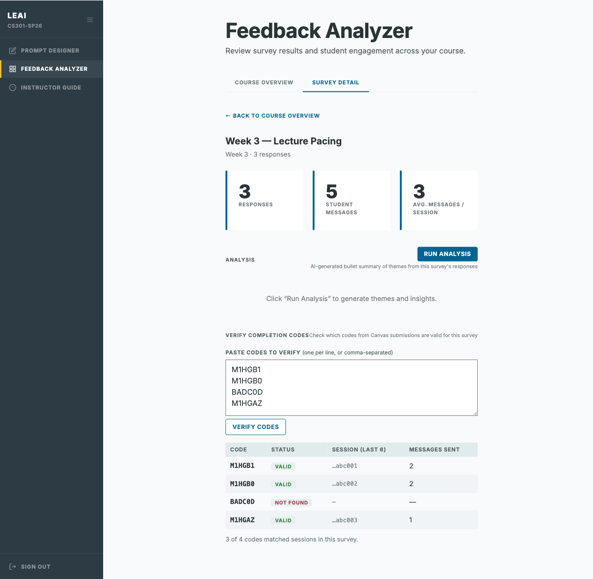
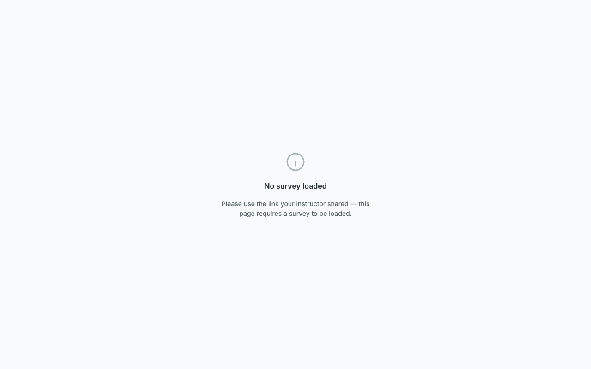
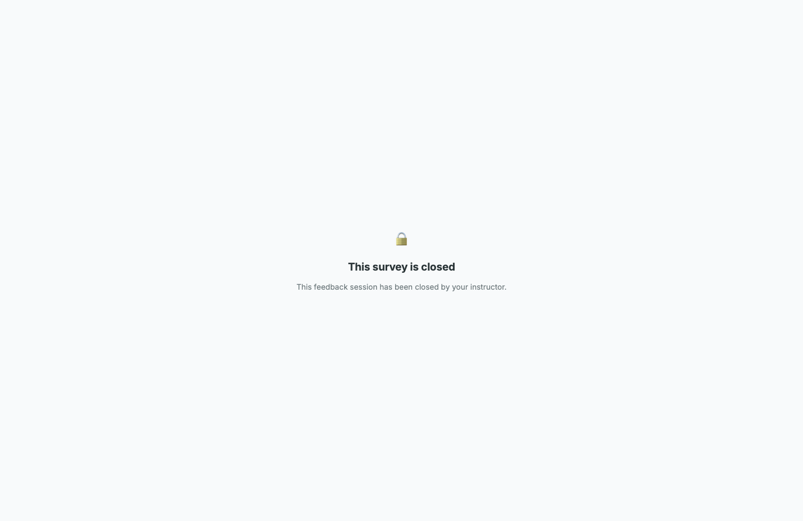
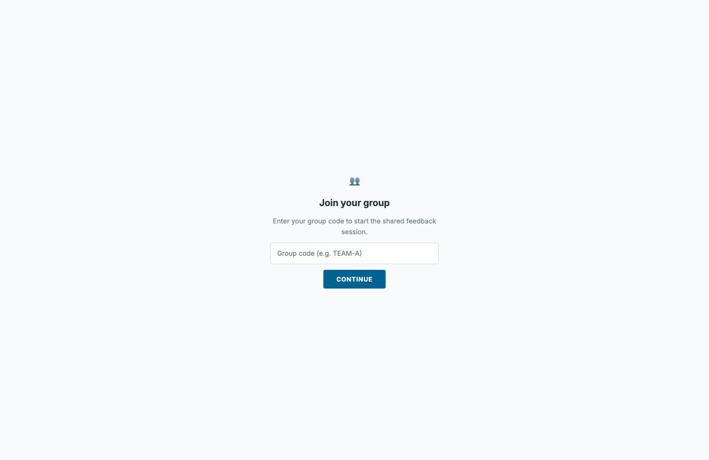
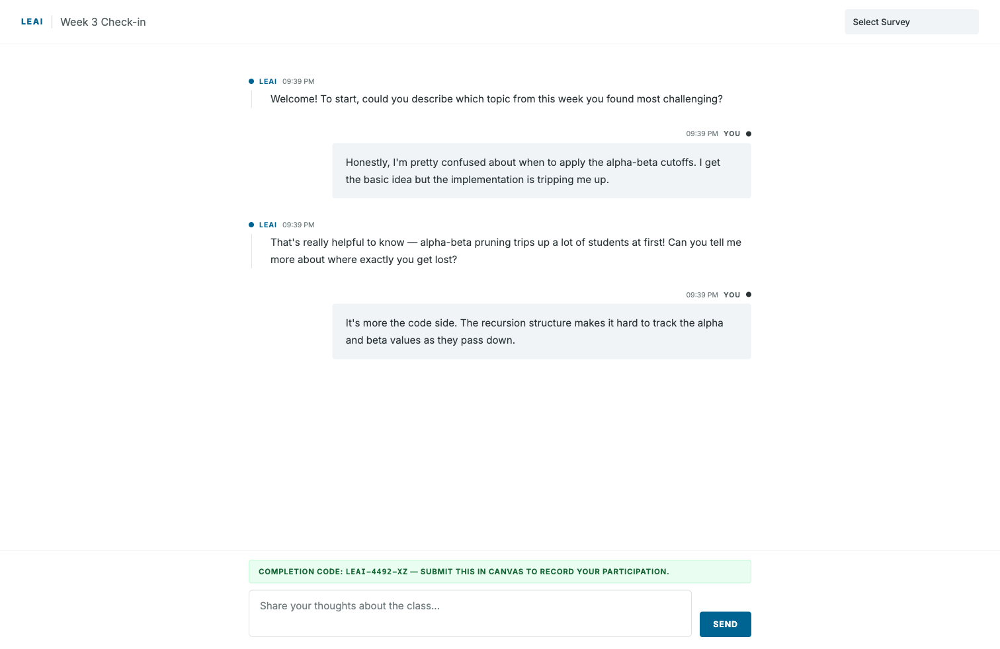

LEAI · Instructor Documentation
LEAI Instructor Guide
A step-by-step manual for creating surveys, reviewing student feedback, and understanding what your students see — no technical background required.
Contents
Quick Start
If you want to run a feedback session today, follow these five steps. The rest of this guide covers each step in detail.
Open the Prompt Designer page and enter your course ID and password. This is where you will create and manage all your surveys.
Open Prompt Designer →
Click one of the template buttons — Weekly Check-in is a good starting point. Give it a label (e.g. "Week 3 Check-in") and click Create Survey & Get Link.
Open Prompt Designer →
Your new survey appears in the list on the right. Click Copy next to its link, then paste it into Canvas, a class slide, or an email. Students do not need an account — they just open the link.
Open Prompt Designer →
Students open the link on any device — phone, tablet, or laptop. They have a short conversation with the AI (typically 5–10 minutes). No login, no app, no account required. When the class period ends, go back to the Prompt Designer and click Close on the survey to stop new responses.

Open the Feedback Analyzer page and log in with the same course ID and password. Click View next to your survey to read student conversations. Use the CSV button to download a spreadsheet of all responses.
Open Feedback Analyzer →
What is LEAI?
LEAI (Learning Experience AI) is a set of tools that lets you collect richer feedback from your students using AI-powered conversations. Instead of a static form, students have a short dialogue with an AI — it gently asks follow-up questions and encourages reflection. You then review the results in a dashboard.
No AI expertise needed. You don't need to know how AI works to use these tools. Think of it like setting up a Google Form, except the form can ask follow-up questions on your behalf.
The Two Tools
LEAI has two pages you will use as an instructor:
Where you create and manage feedback surveys. Set the topic, choose settings, and share a link with students.
Where you see student responses. View conversation summaries, participation counts, and download raw data.
Logging In
Both tools use the same course ID and password that was set up for your course. You will need these two pieces of information:
- Course ID — a short code like
cm115-sp26 - Dashboard password — chosen when your course was created
Keep your password safe. Anyone with your course ID and password can see student responses. Don't share it publicly.
Creating a Survey (Prompt Designer)
Open the Prompt Designer page. After logging in you will see the main dashboard. The left panel is where you build new surveys; the right panel shows all existing surveys for your course.
Using Templates
If you're not sure what to write, start with a template. Four pre-built templates cover the most common use cases.
Near the top of the left panel, you'll see four blue buttons: Weekly Check-in, Midterm Reflection, Project Debrief, and Exit Ticket.
Click any template button. The survey name and instructions fields will fill in automatically with a ready-to-use prompt you can edit or use as-is.
Read the pre-filled text. Change anything that doesn't fit your course. For example, swap "the project" for the actual project name.

Survey Settings
Below the main prompt area is a Survey Settings panel. You can expand it by clicking the heading. These settings control how and when students can participate.
Choose how students identify themselves:
• Anonymous — no identity collected at all
• Pseudonymous — students pick a private alias only they know
• Identified — students enter their real name or student ID
Choose Individual (each student gets their own conversation) or Group (a team shares one conversation by entering a shared group code).
Set a date range for when the survey is active. Students who visit before the open date, or after the expiry date, will see a polite message instead of the chat.
Type short topic tags (e.g., teamwork, pacing) to help organize your surveys. Press Enter after each tag.

Not sure about settings? Leave them at their defaults. You can always edit them later using the Edit button on the survey card.
Reading Status Badges
Each survey card in the right panel shows a colored badge telling you its current status at a glance.
- Open — students can access and submit responses right now
- Closed — you manually closed it; students see a "closed" message
- Expired — the expiry date has passed; no new responses accepted
- Scheduled — the open date is in the future; not yet visible to students

Closing & Reopening a Survey
You can manually close a survey at any time — for example, when a class session ends. You can also reopen it later.
Find the survey card and click the Close button. The badge will immediately change to Closed. Students who visit the link will see a message saying the survey is closed.

On a closed survey card, click the Reopen button. The survey becomes Open again, and the expiry date is automatically extended by 14 days from today.

Editing a Survey
You can change a survey's label, week number, instructions, and date range after it has been created.
Click the Edit button on any survey card. A panel slides open with the current values already filled in.
Update any fields you want. You can change the label, instructions, week number, or date range.
Click the Save Changes button. The survey card updates immediately to reflect the new values.


Duplicating a Survey
If you want to reuse a survey from a previous week, use the Duplicate button instead of retyping everything.
Click the Duplicate button on any survey card. A copy is created with the same prompt and settings, but a fresh link and Open status.
The new survey appears in the list. Use the Edit button to update its label, week number, or instructions before sharing the new link with students.

Feedback Analyzer
The Feedback Analyzer shows you participation numbers, conversation quality metrics, and lets you download raw data. Open the Feedback Analyzer page and log in with the same course ID and password.
Reading the Results Table
The survey table has these columns:
| Column | What it means |
|---|---|
| Week | The week number you assigned when creating the survey |
| Label | The survey name you chose |
| Status | Current lifecycle state: Open, Closed, Expired, or Scheduled |
| Responses | Number of unique students who submitted at least one message |
| Avg. Turns | Average number of messages per student. Higher = deeper conversation. Typically 3–8 is a healthy range. |
| Actions | View → opens the full conversation list. CSV downloads all responses as a spreadsheet. |
What is "Avg. Turns"? Each time a student sends a message and the AI replies, that counts as one turn. An average of 1 means most students sent one message and left. An average of 5 means students had a richer back-and-forth dialogue.
Exporting Responses to a Spreadsheet
You can download all student conversations for a survey as a CSV file, which opens in Excel, Google Sheets, or Numbers.
Locate the survey you want to export in the table.
Click the Export CSV button in the Actions column. Your browser will automatically download a file named something like survey_3_responses.csv.
Double-click the downloaded file to open it in Excel or Google Sheets. Each row is one message in a student conversation. The first column, completion_code, contains the 6-character code for that student's session — use VLOOKUP to match codes students submitted in Canvas.
Verifying Completion Codes
Instead of manually cross-referencing a spreadsheet, you can paste completion codes directly into the Feedback Analyzer and get instant VALID / NOT FOUND results.
Click View → on any survey row to open the Survey Detail tab.
Below the Analysis section, find the Verify Completion Codes panel.
Copy the codes students submitted in Canvas (from a Canvas assignment export or spreadsheet) and paste them into the text box — one per line or comma-separated.
Each code is immediately checked against this survey's sessions. VALID codes show the session ID and how many messages that student sent. NOT FOUND codes did not match any session in this survey.

What Students See
When you share a survey link with students, they land on a simple chat page. Understanding what they see helps you explain the activity and troubleshoot issues.
The Chat Interface
The student sees a minimal chat window. The AI opens with a greeting question based on your prompt. Students type their response and press Send. The conversation continues naturally for a few turns.
What If a Student Opens the Wrong Link?
If a student navigates to the feedback page without a valid survey link (for example, if they bookmark the base URL instead of the survey-specific link), they will see a clear message rather than a broken or blank page.

What Happens When a Survey Is Closed or Expired
If a student tries to access a survey that is no longer active, they will see a clear message explaining why — they won't just get an error.


Students got a "closed" screen but the survey should be open? Go to the Prompt Designer, find the survey, and check the Opens At and Expires At dates. If the expiry date is in the past, click Reopen to reset it.
Anonymity Options — What Students See
Depending on the Anonymity Mode you chose when creating the survey, students may be asked to identify themselves before the chat starts.
Pseudonymous Mode
Before entering the chat, students are asked to enter any alias they want — a nickname, a made-up word, anything. This lets them stay anonymous while still having a consistent identity across sessions.
Group Session Mode
In Group mode, each team shares a conversation. Before entering, students are asked to type their group's code (which you distribute to teams). All members of the same team will see the same conversation.

Canvas Completion Codes
To help students prove they participated, LEAI automatically generates a unique completion code for each student after they send their first message. Students copy this code and submit it in Canvas (or wherever you direct them) to receive participation credit.
As soon as the student sends their first message, a green bar appears at the bottom of the chat.
The bar shows a 6-character code unique to that student, e.g. 0NWCx4. The message reads: "Your completion code: [code] — Submit this in Canvas to record your participation."
Direct students to copy this code and paste it into a Canvas text-entry assignment or quiz.

How to use this in Canvas: Create a Text Entry assignment in Canvas called "Week X Feedback Check-in." In the instructions, paste the survey link and tell students to submit their completion code. You can then verify codes against the CSV export.
Canvas-ready assignment description (copy and paste):
Common Questions
Glossary
| Term | Plain-language definition |
|---|---|
| Survey | An AI-powered feedback session you create and share with students |
| Prompt | The instructions you write telling the AI what topic to discuss with students |
| Turn | One student message plus one AI reply = one turn |
| Session | One student's complete conversation with the AI on a particular survey |
| Response | A student who submitted at least one message (counted once per survey) |
| Pseudonymous | Using a self-chosen alias instead of a real name — private but consistent |
| Completion code | A short code generated for each student after their first message, used to verify participation in Canvas |
| CSV | A spreadsheet file format that opens in Excel, Google Sheets, or Numbers |
| Course ID | A short code identifying your course, used to log in to both LEAI tools |